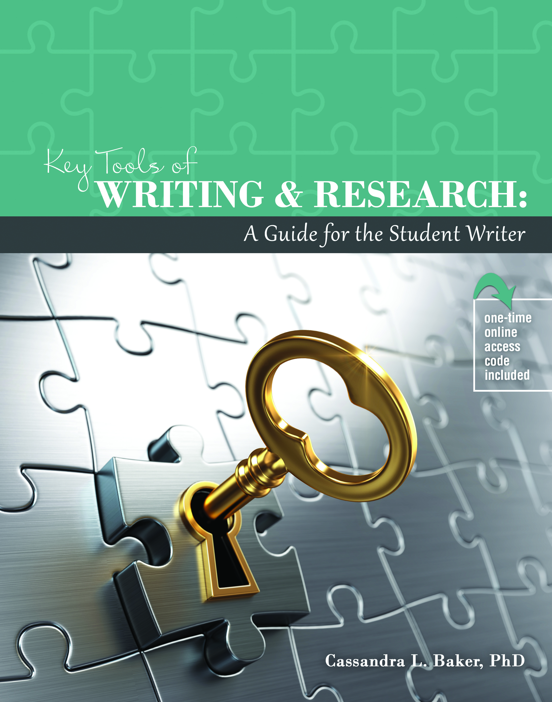

Key Tools
of Writing & Research:
A Guide for the Student Writer
“Writing is a process. Once the student
discovers the tools of writing, the job of writing
is now much easier.”
Cassandra L. Baker, PhD
Author of Key Tools
of Writing and Research
Instructor and Researcher
Cassandra Baker, Ph.D. is an instructor of business management at Gwinnett Technical College. Dr. Baker previously worked in the school of business and school of humanities teaching various business courses at the graduate and undergraduate level, writing and research at University of Phoenix. Prior to joining academia, Cassandra spent 15 years with Ford Motor Company and Volvo Cars of North America. She is a highly accomplished executive with experience in franchise management, organization management, financial management, and strategic planning within marketing sales & service.
International Executive Experience
Cassandra has held various executive positions within Ford and Volvo starting with Dealer Development, and then moving on to Business Management, Best Practices & Process Development, ISO Lead Auditor, Market Representation and Network Project Management. Cassandra took her experience overseas, working in the United Kingdom, Sweden, and China. During her time in Europe she worked with national sales companies and dealers in European Union Accession countries creating project plans to help dealers become profitable.
Academical Degrees
Cassandra holds a PhD in Organization and Management from Capella University, Master of Business Administration from Brenau University and a B.S. in Business Administration from Shorter University. Her continuing education background includes professional training as Six Sigma Black Belt and Green Belt, Certified Sarbanes-Oxley, ISO Lead Auditor and Team Leader Myers-Brigg Certification. Dr. Baker is the owner Sugar Hill Research & Consulting and the author of Key Tools of Writing and Research: A Guide for the Student Writer on her belief in sharing knowledge and assisting students and organizations in achieving their goals can create win-win situations for all involved.
Key Tools of Writing and Research is a guide for the
student on writing effective academic papers. Written in
easy-to-understand language, this text takes a practical
view to writing and research. This book can be used by
students and professionals or by those who would like to
improve their writing and research skills.

- Significance of academies assets.
- Importance of contingency planning.
- Synthesis of rhetorical modes with quality-management tools.
- Analysis of an outline.
- Internet searching using special syntaxes.
- Differences between aggregators, databases, portals, and more!
https://www.bkstr.com/gwinnetttechnicalstore/product/key-tools-of-writing-and-326539-1

https://he.kendallhunt.com/product/key-tools-writing-and-research-guide-student-writer

https://www.amazon.com/Key-Tools-Writing-Research-Student/dp/1792400993/ref=sr_1_1?dchild=1&keywords=Key+Tools+of+Writing&qid=1592151120&sr=8-1